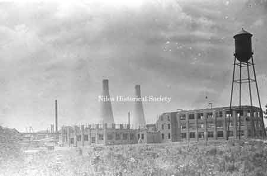
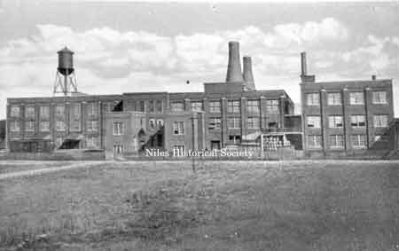
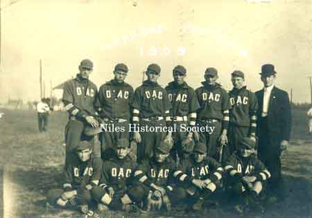

Ward-Thomas Museum


Fostoria Glass Works and General Electric Plant
Ward — Thomas
Museum
Home of the Niles Historical Society
503 Brown Street Niles, Ohio 44446
Click here to become a Niles Historical Society Member or to renew your membership
Click on any photograph to view a larger image, click on image again to zoom into photograph.
 PO1.537 |
The story of Niles Glass Industry L) Photo of a light bulb produced at the GE plant in Niles. This webpage features images from the beginning of the electric lamp industry in Niles, Ohio. The first glass plant was the Fostoria Glassworks which became the General Electric Plant. Both plants were located on West Federal Street near North Main Street. Follow the links below for additional information: |
|
| |
||
|
|
Fostoria
Glass Works Fostoria Glass Works was constructed in 1910 by Fostoria Glass Company, many of the first employees moved here from Fostoria, Ohio. Hand blown glass bulbs were the initial products. Large circular kilns contained molten glass in pots which was extracted through 16 curtain doors on the end of five foot tubes by gatherers who handed the tube to the blower. General Electric acquired the plant in 1911 and later mechanized the process. |
|
| |
||
|  |
Picture
taken during the building of Fostoria Glass which took place in
1910 on the corner of Main Street and Federal Street in Niles. |
|
| |
||
|  |
Another
view of the Fostoria Glass Works built in 1909 and taken over
by GE in 1911. Located at the corner of Main Street and Federal
Street in Niles. |
|
Blowers on pedestal moulds left to right: E. McGowan, John Curtis. Gatherer at station 14- Mr. Sebinaller. PO1.530 |
Photo of one of the glass furnaces and crew |
Glass blowers at the Fostoria Glass
Works. Second from left - J. Fitzgerald, |
| |
||
|
Photo of the glass blowers before mechanization in the twenties. Blower near left with black cap is Charles Krizan. PO1.535 |
Photo of a newspaper article captioned “The men who blow your Mazda bulbs”. Glass blowers worked at the Fostoria Glass Works before the advent of mechanization in the 1920’s. PO1.536 |
Photo taken from the Stein Postcard, |
 SO1.426 |
(L)Fostoria House. When Fostoria Glass Co. built the Niles Plant in 1910, many Fostoria workers moved here. Some lived and took their meals at the Niles Fostoria House, which was located where the McGurk Hotel was located at 62 Railroad Street (Depot Street, now Mahoning Avenue). (R)A photo of the 1909 Champion Fostoria Works baseball team. Later known as General Electric, this industry still exists today. George Kestner and Harry Clapp are identified on back. |
 PO2.23 |
The baseball game is being played on the GE glassworks field on East Federal Street at Mosquito Creek. Building on the right in the background, Niles Auto Wrecking and Metal Co. owned at this time by Jacob Clayman. The Sinclair gas station is west of Niles Auto Wrecking and west of the gas station is the Ice Service Co. with a display of ice boxes in the window. Picture taken circa 1930. Women’s baseball team on the field. Note the model of the cars. PO1.1330 |
The General Electric Plant and grounds. Before mechanization in the early twenties, 205 blowers blew about 225,000 bulbs per day. A blower and gatherer could blow 1100 bulbs in an 8 hour day. After mechaniztion, 2 men and a machine could make 3,000 to 5,000 bulbs per hour. PO1.526 |
Photo of the main entrance and gardens of the General Electric Plant, formerly known as the Fostoria Glass Co. located on the southeast corner of Main Street and Federal Street. PO1.525 |
|
Aerial view of the General Electric Plant and grounds. ca 1960. |
Prior to demolition in 2015. Looking |
Another Aerial view of the General Electric |
|
|
||


{kind=link}
{kind=link}
{kind=link}
{kind=link}
{kind=link}
{kind=link}
{kind=link}
{kind=link}
{kind=link}
{kind=link}
{kind=link}
{kind=link}